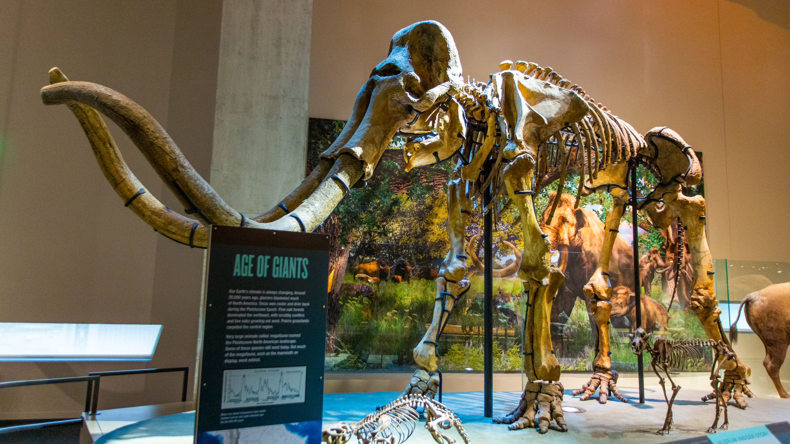

Attractions in Dallas
Reunion Tower
Reunion Tower is a 561 ft observation tower in Dallas, Texas, United States and one of the city's most recognizable landmarks. The GeO-Deck offers a stunning and breathtaking 360-degree panoramic view of the city that has to be seen to be believed.
Dallas Arboretum and Botanical Garden

Nestled on the shores of White Rock Lake, the Dallas Arboretum was named "One of the Most Breathtaking Gardens in the World" by Architectural Digest.
Perot Museum of Nature & Science

Perot Museum of Nature and Science is a jewel in the heart of Downtown Dallas. Once you're inside, you'll discover hands-on-activities, interactive kiosks, eleven permanent exhibits and a state-of-the-art 3D theater.